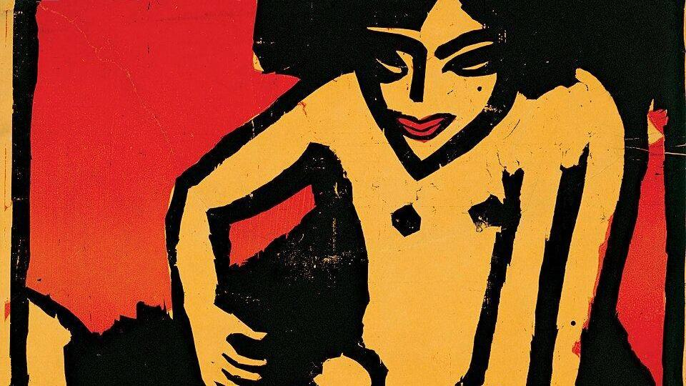

21-27 Eylül İstanbul konser takvimi: hafta boyunca sahnedekiler

Görsel: Ernst Ludwig Kirchner - Poster for the exhibition for the artists' group "Die Brücke" at the Arnold Gallery Dresden - Go · Ernst Ludwig Kirchner · Public domain · Wikimedia Commons
21-27 Eylül 2026 haftasında İstanbul'da açık hava tiyatrolarından küçük kulüplere kadar geniş bir program var. Yaz sahnelerinin son haftalarına girilmesi ve okul dönüşü etkinliklerinin üst üste binmesi, haftalık konser takvimi aramalarını artırdı.
21-27 Eylül İstanbul konser takviminde neler var?
Harbiye Cemil Topuzlu Açık Hava Tiyatrosu haftanın en yoğun adreslerinden. Onedio'nun 17 Eylül tarihli listesine göre Mabel Matiz 22 Eylül'de, Aşkın Nur Yengi 25 Eylül'de, Gülşen 26 Eylül'de, Zara 27 Eylül'de bu sahnede.
Rock tarafında Şebnem Ferah KüçükÇiftlik Park'ta, Kaan Tangöze 24 Eylül'de Blind İstanbul'da, Zakkum 25 Eylül'de Dorock XL Kadıköy'de, Gevende aynı gün Babylon'da, Gaye Su Akyol 26 Eylül'de Blind İstanbul'da sahne alıyor.
Büyükçekmece Kültürpark Kemal Sunal Amfi Tiyatro'da 26 Eylül'de Selda Bağcan, 27 Eylül'de Duman var. Elektronik tarafta Black Coffee 25 Eylül'de Ataköy Marina Açık Hava Sahnesi'nde; Ticketle ayrıca 26 Eylül'de KüçükÇiftlik Park'ta Boris Brejcha'yı listeliyor.
Popta Serdar Ortaç 25 Eylül'de JJ Arena'da, Derya Uluğ aynı gün Paribu Vadi Açık Hava'da, Semicenk 26 Eylül'de Maximum Uniq Açık Hava'da sahneye çıkıyor. Sami Yusuf 27 Eylül'de İstanbul Kongre Merkezi Harbiye Oditoryumu'nda.
Dünya müziği ve arabesk tarafında Bülent Ersoy 25 Eylül'de Jolly Joker Vadistanbul'da, Mustafa Keser aynı gün Mahsus Sahne Maslak'ta. Kadıköy ve Beşiktaş'taki küçük sahnelerde de hafta boyunca program yoğun.
21-27 Eylül konser takvimi neden bu kadar arandı?
Hafta, açık hava sezonunun kapanışına denk geliyor; Harbiye, KüçükÇiftlik Park ve Büyükçekmece gibi mekânlarda üst üste program var. Ticketle'ın sayfası eylül ayı için İstanbul'da 63 konser listeliyor.
Aynı akşama düşen çok sayıda etkinlik de seçim yapmayı zorlaştırıyor. 25 ve 26 Eylül, her iki listede de en kalabalık iki gün olarak öne çıkıyor.
Konser biletleri nereden bakılır, hangi bilgiler kesin değil?
Onedio, kapı açılış saati, bilet fiyatı ve rezervasyon için resmî bilet satış platformlarının ve mekânların kendi hesaplarının takip edilmesini öneriyor. Ticketle, Şebnem Ferah konseri için başlangıç fiyatını 1.150 TL olarak gösteriyor.
İki kaynak bazı tarihlerde ayrışıyor. Onedio Şebnem Ferah'ı yalnızca 24 Eylül'de listelerken Ticketle 24 ve 27 Eylül olmak üzere iki tarih için, saat 21.30'da bilet açıyor. Mabel Matiz için Onedio 22 Eylül, Ticketle 22-23 Eylül diyor.
Ticketle'da 22 Eylül'de KüçükÇiftlik Park'ta Metro Boomin görünüyor; Onedio'nun listesinde bu konser yok. Hangi programın nihai olduğu mekân duyurularından teyit edilmeli.
İstanbul konser takviminde sırada ne var?
Festival tarafında İstanbul Oktoberfest 26-27 Eylül'de Life Park'ta. 24 Eylül'de Haliç Kongre Merkezi'nde Le Trio Joubran ve Azam Ali'nin yer aldığı bir dayanışma gecesi düzenleniyor.
Ekim programının tamamı henüz açıklanmadı. Ticketle, Şebnem Ferah'ın 7 Kasım'da Cemil Topuzlu Açık Hava Tiyatrosu'nda bir konseri olduğunu gösteriyor.
Takip etmek için
- Ticketle'ın İstanbul Konserleri – Eylül etkinlik takvimi sayfası
- Onedio'nun 17 Eylül 2026 tarihli İstanbul konser takvimi yazısı
- KüçükÇiftlik Park ve Harbiye Cemil Topuzlu Açık Hava Tiyatrosu'nun kendi duyuru hesapları
Sık sorulan sorular
21-27 Eylül'de Harbiye'de kimler sahne alıyor?
Onedio'nun listesine göre 22 Eylül'de Mabel Matiz, 25 Eylül'de Aşkın Nur Yengi, 26 Eylül'de Gülşen, 27 Eylül'de Zara. Ticketle, Mabel Matiz için 22-23 Eylül olmak üzere iki tarih gösteriyor.
Şebnem Ferah hangi gün sahnede?
Mekân KüçükÇiftlik Park. Onedio 24 Eylül'ü veriyor; Ticketle hem 24 hem 27 Eylül için 21.30'da bilet listeliyor. Kesin gün için mekânın kendi duyurusuna bakmak gerekiyor.
Bilet fiyatları ne kadar?
Fiyatlar konsere göre değişiyor ve tek bir liste yok. Ticketle, Şebnem Ferah için 1.150 TL'den başlayan bilet gösteriyor; diğer konserler için satış platformlarındaki güncel fiyatlara bakmak gerekiyor.
Olgular şu yayıncıların haberlerinden derlendi: Onedio, Ticketle. Metnin tamamı TrendSaphiens tarafından yazıldı; kaynaklarla kelime örtüşmesi %0.0 (eşik %5). Kaynaklarda olmayan bilgi eklenmedi.